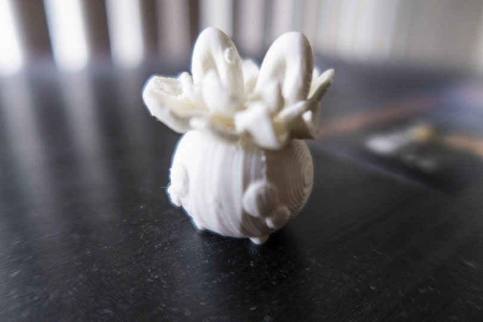
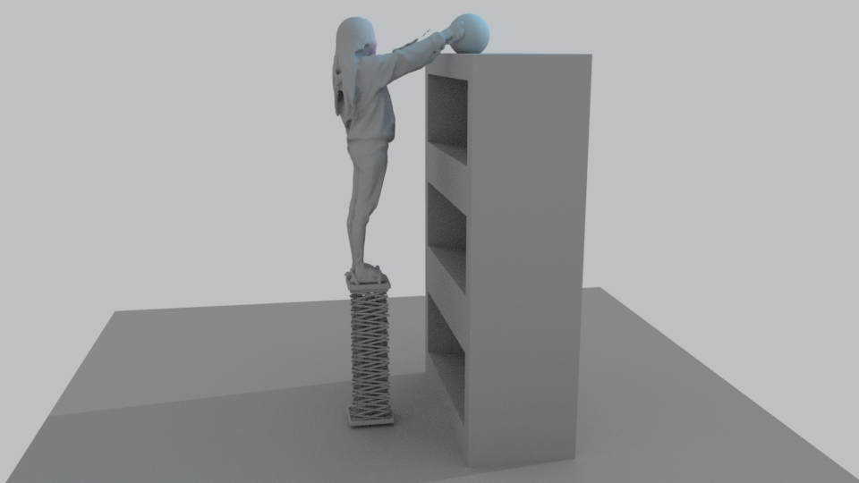
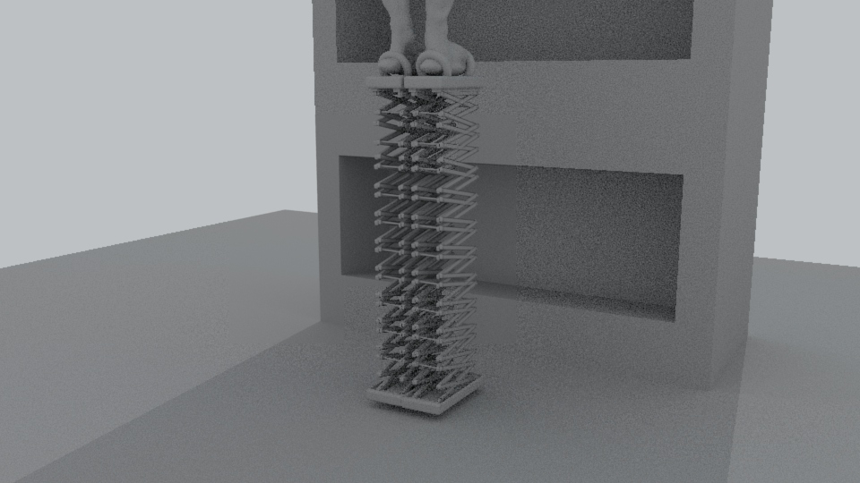
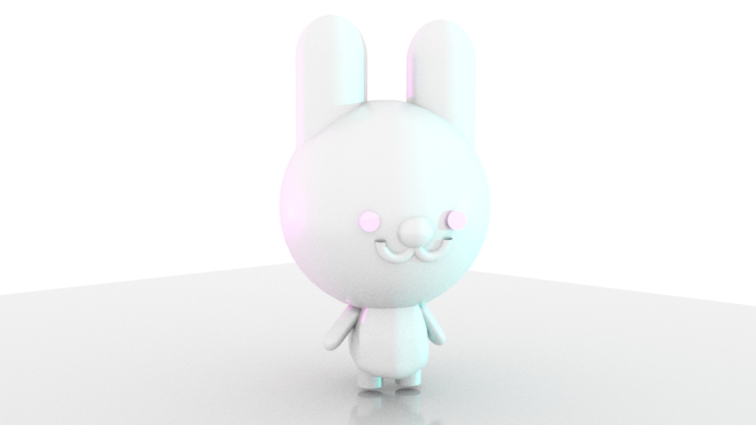
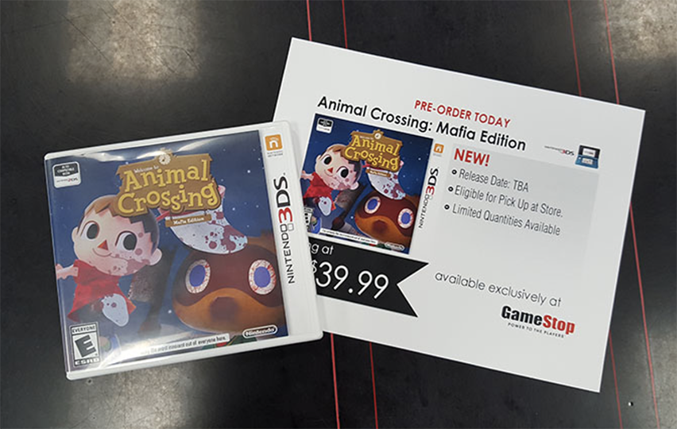

Portfolio
3 D A N I M A T I O N
My Kind of Coffee, Autodesk Maya, 960 × 540px. {1 min loop, no sound}
For this project, I decided to revisit my bunny-alien character and use him in another context. I wanted to use an object that was familiar, so I went with a coffee mug. This animation is fairly simple. Repetition and overlapping made it possible to make a 1 minute loop. They all commonly make their way into the coffee mug. The movements between each character varies, as it reciprocates different energy levels that make up a cup of coffee: hyper, slow, and jumpy.3 D P R I N T I N G
Succulent Bunny, Autodesk Maya & Lulzbot Mini, 1 x 1 in.
This 3D print was made from a 3D model designed that I created in Autodesk Maya. The goal was to be familiar with the concept of 3D printing and how these transformations are being translated from screen to real life.N A R R A T I V E S T O R Y
<Countdown to <3, Adobe Premiere Pro, 1920 x 1080 px.
Logline: Two people are given a chance to meet their soulmate via text message and looks forward to the days coming forth.A collaboration project with Andrew Mai who also helped film, direct, and edit the final version. The objective was to create a logline and a 3-5 minute narrative. It was my first attempt filming a longer video. It was rewarding to see how it came out in the end.
P R O S T H E T I C
Extendo Boosts, Autodesk Maya & Skanect, 960 x 540 px.
Extendo Boosts is a pair of prosthetics that adjusts an individual's height using a remote control and allows the them to reach objects that seem to be out of their reach. With a adjustable strap attachments at the base and a criss cross metal structure, the individual is safe and stabilize when using it. The bottom base is slightly larger and has a concave that fits the the top base, allowing them to merge perfectly into one piece.E N D L E S S L O O P
A Loop with Variations, Adobe Premiere Pro, 1920 x 1080 px.
For my final cut, I used 1 created material (the background) and 5 found green screen elements. I had a lot of fun experimenting with composition and deciding when things should loop and multiply. I found that by choosing the soundtrack first, it made it a lot easier for me to figure out the placement and timing of things. Overall, I'm happy with how it turned out and I hope you enjoy this loop!3 D M O D E L I N G
Bunny, Autodesk Maya, 960 x 540 in.
This is a 3D render of a 3D model design that I created as a test print. I was getting familiar with the 3D printer and how it works.N A R R A T I V E I N T E R V I E W
A Gamer's Story, Adobe Premiere Pro, 1920 x 1080 px.
For this video, we were required to work in pairs. I teamed up with my classmate, Andrew Mai, to film a minute long interview with my little brother, Derrick. In this interview, he talks about what gaming means to him. I mainly handled the B-roll and editing process while my partner worked the main camera. I did not know how much went into creating an interview and how cutting clips became my best friend.T I M E L A P S E
Santana Row Timelapse, Adobe Premiere Pro, 1920 x 1080 px.
I decided to head over to Santana Row and create a time-lapse of the how it is at night. I used an intervalometer and stayed at the location for over an hour each. I took at least a total of 2000 photos with an interval of 3 seconds. Although the process was pretty time consuming, I really liked how the outcome turned out.A N I M A T E D G I F

Looped Gif, Adobe After Effects & Adobe Premiere Pro, 641 × 361px.
The second animated gif was not too difficult at all to do. For this gif, I did not have to worry about the background not looping, but I wished I filmed the background even longer, so that it would appear even more seamlessly. What I had a hard time with was timing and spacing for the found green screen elements. I focused on making sure that the frames and movements were exactly the same. Although the looping gif seems simple, it took a lot of time to get it almost right.L I E 2 ME
Animal Crossing: Mafia Edition, Adobe Photoshop, 852 × 540 px.
A two piece project whose objective is to create a believable project. This was inspired by my love for the Nintendo 3DS, Animal Crossing series, and the card game Mafia, which I used to play often with my friends.